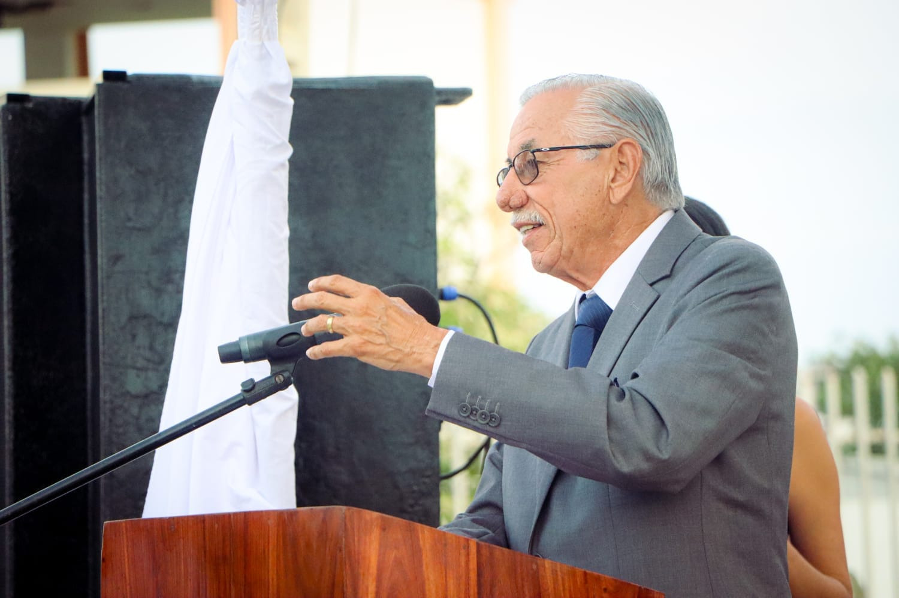
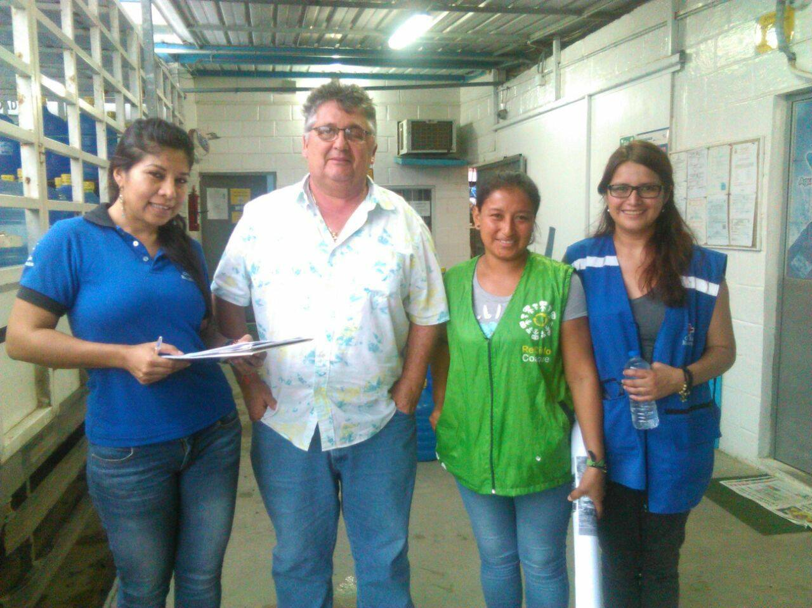

Carlos Mendoza, alcalde de Sucre, por medio de un plan de 5 pasos mencionará como llamará a la inversión extranjera a la ciudad, potenciandola y reactivando su puerto.
Orador 2

Ciro Dueñas, ciudadano y fiel contribuyente a la ciudad, explicará la importancia de invertir en negocios en los alrededores de Bahía, para así generar comercio y complemente el turismo y sea un lugar que no dependa del resto de ciudades de la provincia como fue después del terremoto del año 2016 en Pedernales.
Programa
Todos estos programas se darán desarrollo en el Hotel La piedra.